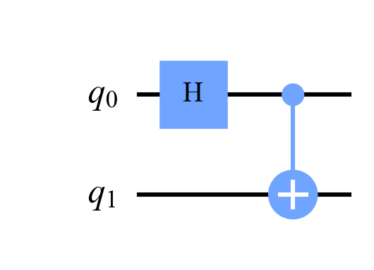

CNOT truth table (labels are q1 q0): |00> -> |00> |01> -> |11> |10> -> |10> |11> -> |01>
Quantum Computing
 about 11 min
about 11 min qc-w4d2.ipynb
qc-w4d2.ipynb
CNOT and entanglement
One two-qubit gate makes two qubits share a single story: always agreeing, each one random on its own.
In this lesson you will
- Use the CNOT gate's truth table, with Qiskit's bit order
- Build a Bell state with H and CNOT, and explain its correlations
- Tell a product state from an entangled one
Warm-up
1 minTwo coins that always agree

Imagine two coins that you flip in different rooms. Each one is a perfectly fair coin, heads or tails 50/50. Yet whenever you compare notes, they landed the same way. Every time. No ordinary coins behave like that. Two qubits can, and it takes just two gates. This is entanglement.
Big idea
4 minCNOT, Bell states and what 'entangled' means
The CNOT (controlled-NOT) gate acts on two qubits: if the control is 1 it flips the target, otherwise it does nothing. In circuit diagrams the control is a dot and the target a ⊕. Applied to a superposition, it acts on every branch at once.
Start in , put qubit 0 into with H, then CNOT from qubit 0 to qubit 1:
(Qiskit labels: in qubit 0 is the 1. The CNOT sees that and flips qubit 1, giving .) This is a Bell state. Measure it and you get 00 or 11, 50/50, never 01 or 10.
Why is that strange? Yesterday, separately prepared qubits gave product states, , whose amplitudes always satisfy
The Bell state has and , so this is . It is not a product: you cannot describe it as "qubit 0 is in this state and qubit 1 is in that state". That is the definition of entangled. The pair has a definite story; the individual qubits do not.

No faster-than-light messages
If the two qubits are far apart, measuring one instantly tells you the other's result. But you can't choose what you get (it's 50/50), so no message can be sent this way. The correlation only shows up when the two sides compare notes.
Play
4 minDial up the entanglement
Qubit 0 gets a rotation , then a CNOT. At nothing is entangled; at you have a Bell state. Watch each qubit's own Bloch arrow, and measure some pairs.
Try this
Slowly raise from 0 to 90°. As the entanglement meter fills, both single-qubit arrows shrink. At the Bell state they vanish into the center: neither qubit has a direction of its own anymore. All the information lives in the correlation.
Code
3 minEntanglement in Qiskit
The notebook for this lessonEvery code cell below, with what it printed, is in
qc-w4d2.ipynb. To change the code and run it yourself, open the notebook in Google Colab (free, in your browser) or download it for your own Jupyter.import numpy as np
from qiskit import QuantumCircuit
from qiskit.quantum_info import Statevector
def probs(sv):
return {str(k): round(float(v), 3) for k, v in sv.probabilities_dict().items()}
cnot = QuantumCircuit(2)
cnot.cx(0, 1) # control = qubit 0, target = qubit 1
print("CNOT truth table (labels are q1 q0):")
for label in ["00", "01", "10", "11"]:
out = Statevector.from_label(label).evolve(cnot)
print(f" |{label}> -> |{list(probs(out))[0]}>")What it printed in the notebook
bell = QuantumCircuit(2)
bell.h(0)
bell.cx(0, 1)
sv = Statevector(bell)
print("amplitudes (00, 01, 10, 11):", np.round(sv.data.real, 3))
print("probabilities:", probs(sv))
bell.draw("mpl", style="clifford")What it printed in the notebook
amplitudes (00, 01, 10, 11): [0.707 0. 0. 0.707]
probabilities: {'00': 0.5, '11': 0.5}
from qiskit.primitives import StatevectorSampler
measured = bell.copy()
measured.measure_all()
result = StatevectorSampler(seed=3).run([measured], shots=1000).result()[0]
print("counts:", result.data.meas.get_counts())
print("first 16 shots:", " ".join(result.data.meas.get_bitstrings()[:16]))What it printed in the notebook
counts: {'00': 502, '11': 498}
first 16 shots: 00 00 11 11 00 00 00 00 11 00 00 11 00 11 11 11def entanglement_test(sv):
a00, a01, a10, a11 = sv.data
return abs(a00 * a11 - a01 * a10)
separate = QuantumCircuit(2)
separate.h(0) # H on qubit 0 only, no CNOT
print("H only :", round(entanglement_test(Statevector(separate)), 3), "-> product state")
print("Bell state :", round(entanglement_test(Statevector(bell)), 3), "-> entangled")What it printed in the notebook
H only : 0.0 -> product state Bell state : 0.5 -> entangled
from qiskit.quantum_info import partial_trace
rho0 = partial_trace(Statevector(bell), [1]) # trace out qubit 1
print("density matrix of qubit 0 alone:")
print(np.round(rho0.data.real, 3))
print("purity:", round(float(np.real(rho0.purity())), 3), " (1 = pure state, 0.5 = completely mixed)")What it printed in the notebook
density matrix of qubit 0 alone: [[0.5 0. ] [0. 0.5]] purity: 0.5 (1 = pure state, 0.5 = completely mixed)
Your turn
2 minYour turn: the CNOT truth table
Apply cx(0, 1) (control qubit 0, target qubit 1) to each of the four basis states and print where each goes. Then swap the roles with cx(1, 0). Predict each line first, remembering that labels read q1 q0.
from qiskit.quantum_info import Statevector
for label in ["00", "01", "10", "11"]:
qc = QuantumCircuit(2)
# TODO: add the CNOT with control 0 and target 1
out = Statevector.from_label(label).evolve(qc)
(result,) = out.probabilities_dict().keys() # a basis state goes to a single basis state
print(f"|{label}> -> |{result}>")Need a hint?
One line inside the loop: qc.cx(0, 1). A basis state goes to a basis state, so probabilities_dict() has a single key.
Show a solution
for control, target in [(0, 1), (1, 0)]:
print(f"cx({control}, {target}): control q{control}, target q{target}")
for label in ["00", "01", "10", "11"]:
qc = QuantumCircuit(2)
qc.cx(control, target)
out = Statevector.from_label(label).evolve(qc)
(result,) = out.probabilities_dict().keys()
print(f" |{label}> -> |{result}>")
print("The target flips exactly when the control is 1. With q0 as control, that's when the RIGHT character is 1.")What it printed in the notebook
cx(0, 1): control q0, target q1 |00> -> |00> |01> -> |11> |10> -> |10> |11> -> |01> cx(1, 0): control q1, target q0 |00> -> |00> |01> -> |01> |10> -> |11> |11> -> |10> The target flips exactly when the control is 1. With q0 as control, that's when the RIGHT character is 1.
Check yourself
2 minQuick check
Question 1 of 3
CNOT with control qubit 0 and target qubit 1 acts on the Qiskit state . What comes out?
Question 2 of 3
You measure the Bell state a thousand times. Which result never appears?
Question 3 of 3
Is the state entangled?
Wrap-up
1 minToday in one sentence
Quantum link
Entangling gates are what make quantum feature maps interesting. A map built only from one-qubit rotations treats each feature separately and is easy to simulate. Adding CNOTs mixes features together in the -dimensional space, and the popular "ZZ feature map" is built from exactly H, rotations and CNOTs.
Go deeper (optional)
Nielsen and Chuang, section 1.3.2 (multiple-qubit gates) introduces CNOT; section 1.3.6 builds the Bell states with exactly this circuit.
Next in Quantum Computing: all four Bell states, and correlations that no pair of coins can fake.

That's the lesson!
Tap the button to save it. Short and steady wins.
Next in Quantum ComputingBell states and correlations
Marked by mistake? Undo